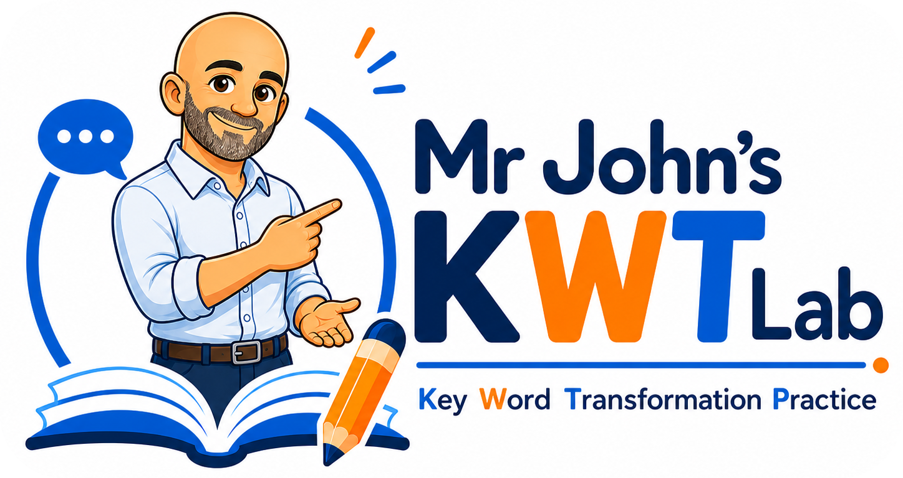

1
Time and Tense Transformation
Practise AGO, FOR, SINCE, LAST, STARTED, BEEN and TIME transformations through Study Mode, Multiple Choice, Transformations and Exam Mode.
Available
Open

Choose a training block and practise Key Word Transformations through focused, interactive and exam-oriented activities designed to improve accuracy, flexibility and confidence.
Choose a focused grammar or vocabulary block. Each available section is designed specifically for Cambridge B2 First Key Word Transformations.
Practise AGO, FOR, SINCE, LAST, STARTED, BEEN and TIME transformations through Study Mode, Multiple Choice, Transformations and Exam Mode.
Practise certainty, possibility, impossibility, obligation, prohibition, advice, regret, criticism and ability with modal verb transformations.
Practise TOO, ENOUGH, SO and SUCH transformations through Study Mode, Multiple Choice, Transformations and Exam Mode.
Practise passive voice, reporting passive, two-object passive and causative structures through Study Mode, Multiple Choice, Transformations and Exam Mode.
Practise negative adverbials, No sooner / Hardly / Scarcely, conditional inversions, Not only... but also and advanced FCE inversion patterns.
Practise reported statements, questions, commands, requests, time-reference changes and advanced reporting verbs for B2 First Part 4.
Train lexical transformations using high-frequency phrasal verbs, set phrases, idioms and collocations.
Practise IF, UNLESS, AS LONG AS, PROVIDED THAT, ON CONDITION THAT, second and third conditionals, advice structures and formal conditional inversions.
Practise AS...AS, MORE THAN, LESS THAN, THE MOST, NEVER...SUCH, NOWHERE NEAR, NOTHING LIKE, quantity comparisons and ANY + comparative structures.
Practise DENY, ADMIT, AVOID, SUGGEST, MANAGE, REFUSE, REMEMBER, USED TO, BE USED TO, PREPOSITION + -ING and WOULD RATHER patterns.
A future mixed-practice trainer combining all blocks into one complete exam-style challenge.
Every block follows a clear progression from recognition to exam performance.
Identify the target structure and understand what meaning it expresses.
Rewrite sentences accurately while keeping the original meaning.
Practise the same pattern with different contexts, tenses and grammatical frames.
Move towards exam-style speed, accuracy and confidence.